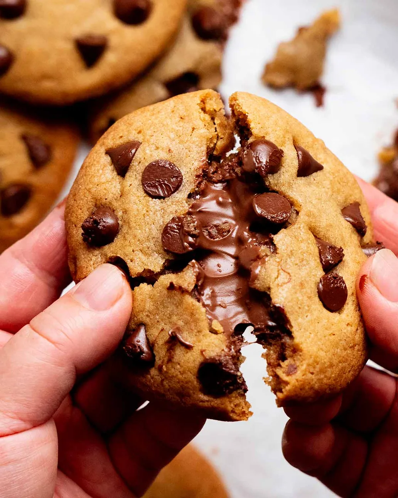

Nutella Stuffed Cookies

Description
This is no ordinary cookie.
his is a cookie that is sinfully decadent, and makes no apology for it.
I feel like the photos tell you everything you need to know to do a run to the grocery shop so you can make these immediately…
But just in case you’re one of those sensible people who thinks before they act (what is life like that, I wonder? 🤔), this is what you’re in for: a soft baked, buttery chocolate chip cookie with beautiful caramel undertones that’s chewy on the inside and just the right amount of crispiness on the edges.
Oh, and it’s stuffed with Nutella. In case you missed that part!!
I love how it looks so innocent when you pull it out of the oven. Just another chocolate chip cookie…
Ingredients
Filling:
- 200g Nutella
- 90g dark chocolate chips
Cookie Dough:
- 200g plain flour
- 0.5 tsp baking soda
- 0.25 tsp cooking salt
- 120g unsalted butter
- 140g brown sugar
- 1 tsp vanilla extract
- 1 tsp honey
- 1 large egg
Steps
Cookie Dough:
- Mix dry – Mix the flour, baking soda and salt in a bowl, set aside.
- Barely melt butter – Using a heatproof bowl, microwave the butter for 30 seconds on high until mostly but not fully melted, then stir with a rubber spatula to finish melting it so it's "milky" rather than clear yellow oil (Note 5).
- Wet mixture – Add the sugar, vanilla and honey, stir until combined. Add the egg and stir until combined, it should look like caramel.
- Chill dough 1 1/2 hours – Add the flour mixture and stir until combined. The mixture should be slightly warm and too soft to roll into balls. Cover and refrigerate for 1 1/2 hours to cool and firm up enough to roll into a log.
Frozen Nutella Moulds:
- Line a small tray with baking paper / parchment paper. Dollop Nutella on tray and spread to ~8mm/ 1/3"thick rounds. Freeze for 1 hour until firm enough to pick up.
Stuffing and Baking:
- Preheat the oven to 180°C/350°F (160°C fan-forced). Lightly grease 2 trays then line with paper.
- Cut dough – Scrape dough out and shape/roll into a ~18cm / 7" log. Cut into 10 equal pieces.
- Stuff – Flatten cookie dough, press in frozen Nutella, bundle dough up around it to enclose and seal. Flip upside down so the smooth side is facing up. Shape into ~1.5cm/ 3/5" thick rounds, press choc chips into the surface and sides. Repeat to make 10 cookies, 5 on each tray, 8cm/3" apart to allow for spreading (Note 6 working tips).
- Bake both trays at the same time for 12 – 13 minutes, or until the edges of the cookies are golden, the centre is pale golden and just set (ie not raw melty dough).
- Cool & swoon – Remove from the oven and leave on the tray for 10 minutes (finish cooking / set). Transfer to a rack, cool for at least another 5 minutes. Grab, bite, swoon. That moment when the melty Nutella floods into your mouth…..
Return to Home